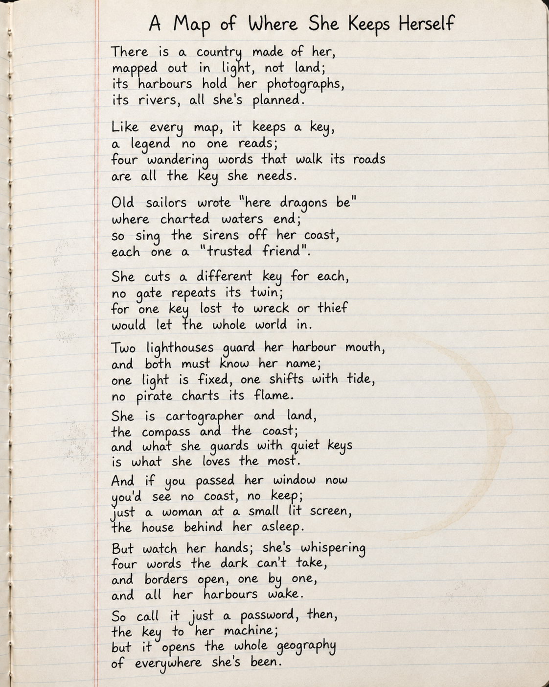

Short answer: yes, remarkably well; and imperfectly, in ways worth understanding. This tool walks through what actually happens when you upload a handwritten page or a voice memo to an AI: where the file goes, how it gets read, why messiness turns into errors, and one thing every researcher should know before uploading anything.
Here is a poem, handwritten into a notebook three times: neatly, in a hurry, and messily, complete with crossed-out corrections and a coffee stain. These are real scanned pages, not fonts. Choose a version, then upload it and watch what the machine does with it.

Now the same journey for sound. Here is a voice memo recorded after a morning site inspection. Choose the recording conditions, then send it off for transcription.
Both uploads made the same trip: your device, the internet, and then a data centre that is usually not in Australia. Most of the popular AI tools process uploads in the United States; some are run by Chinese companies and process them in China. The finished text comes back to your screen; the file itself made an international journey to get read.
Assume anything you upload to a free public AI tool is processed overseas, under that country's laws, on that company's servers.
Many free tiers can store what you upload and use it to improve their models. Paid and workplace versions often promise not to; the settings and terms differ tool by tool.
Shopping lists and your own drafts: fine. Interview recordings, patient information, cultural knowledge, other people's voices: stop and use the approved tool for that work, or don't upload at all.
The question is never just "can the AI read this?" It is also "who else is holding it while the AI reads it?"
Trained on enormous amounts of text and imagery, OCR reads reasonably neat handwriting well, and speech-to-text handles clear recordings well. These tools are useful, and getting better.
Scrawl, background noise, crosstalk, accents and unfamiliar words all push the machine into confident guessing. Teaching a model every handwriting style and every voice on earth is extremely hard; the long tail never ends.
Errors come back as plausible words, not obvious garbage. Anything that matters (names, numbers, quotes, medication doses) gets read by a human before it gets used.
OCR (Optical Character Recognition): software that turns an image of writing (typed or handwritten) into editable text.
Speech-to-text / ASR (Automatic Speech Recognition): software that turns recorded speech into written text.
Pixels: the grid of coloured dots that make up a digital photo; all the machine ever "sees".
Segmentation: the step where the machine finds the lines, words and letter shapes on the page before trying to read them.
Confidence score: the machine's own estimate of how sure it is about each word; low confidence is where to look first for errors.
Data centre: the warehouse of computers, often overseas, where uploads are actually processed.